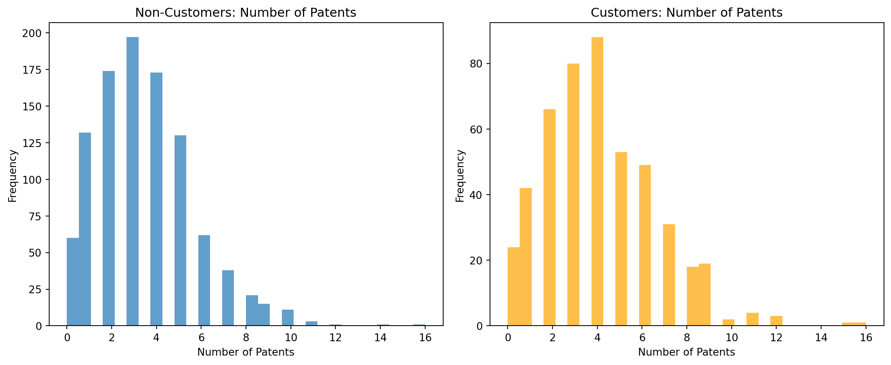
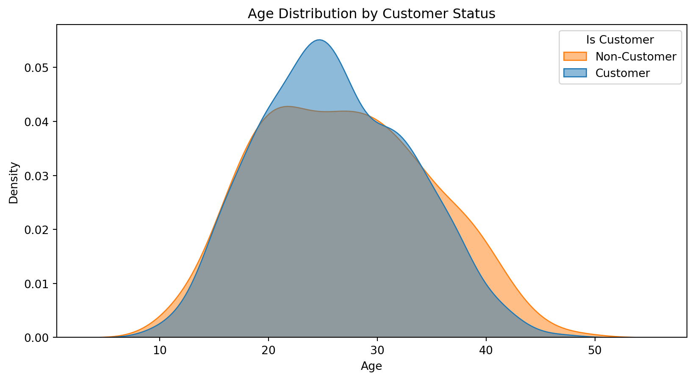
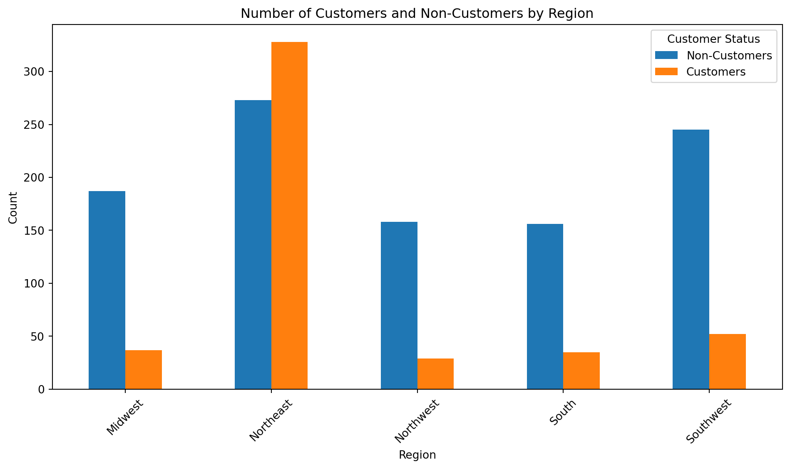
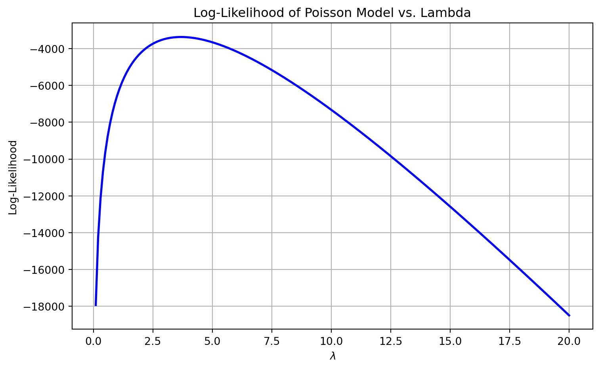

import pandas as pd
df1 = pd.read_csv('blueprinty.csv')
df1.head()| patents | region | age | iscustomer | |
|---|---|---|---|---|
| 0 | 0 | Midwest | 32.5 | 0 |
| 1 | 3 | Southwest | 37.5 | 0 |
| 2 | 4 | Northwest | 27.0 | 1 |
| 3 | 3 | Northeast | 24.5 | 0 |
| 4 | 3 | Southwest | 37.0 | 0 |
Brian Pintar
May 5, 2025
Blueprinty is a small firm that makes software for developing blueprints specifically for submitting patent applications to the US patent office. Their marketing team would like to make the claim that patent applicants using Blueprinty’s software are more successful in getting their patent applications approved. Ideal data to study such an effect might include the success rate of patent applications before using Blueprinty’s software and after using it. Unfortunately, such data is not available.
However, Blueprinty has collected data on 1,500 mature (non-startup) engineering firms. The data include each firm’s number of patents awarded over the last 5 years, regional location, age since incorporation, and whether or not the firm uses Blueprinty’s software. The marketing team would like to use this data to make the claim that firms using Blueprinty’s software are more successful in getting their patent applications approved.
First, we can read in the data and do some exploratory analysis.
| patents | region | age | iscustomer | |
|---|---|---|---|---|
| 0 | 0 | Midwest | 32.5 | 0 |
| 1 | 3 | Southwest | 37.5 | 0 |
| 2 | 4 | Northwest | 27.0 | 1 |
| 3 | 3 | Northeast | 24.5 | 0 |
| 4 | 3 | Southwest | 37.0 | 0 |
Let’s compare histograms and means of number of patents by customer status.
import matplotlib.pyplot as plt
# Create two histograms side by side
plt.figure(figsize=(12, 5))
# Histogram for non-customers
plt.subplot(1, 2, 1)
plt.hist(df1[df1['iscustomer'] == 0]['patents'], bins=30, alpha=0.7)
plt.title('Non-Customers: Number of Patents')
plt.xlabel('Number of Patents')
plt.ylabel('Frequency')
# Histogram for customers
plt.subplot(1, 2, 2)
plt.hist(df1[df1['iscustomer'] == 1]['patents'], bins=30, alpha=0.7, color='orange')
plt.title('Customers: Number of Patents')
plt.xlabel('Number of Patents')
plt.ylabel('Frequency')
plt.tight_layout()
plt.show()
Histograms indicate somewhat similar results. Let’s compare means to test for statistical significance.
from scipy.stats import ttest_ind
# Separate the groups
patents_customers = df1[df1['iscustomer'] == 1]['patents']
patents_non_customers = df1[df1['iscustomer'] == 0]['patents']
# Calculate means
mean_customers = patents_customers.mean()
mean_non_customers = patents_non_customers.mean()
# Perform the t-test
t_stat, p_value = ttest_ind(patents_customers, patents_non_customers, equal_var=False)
# Print results
print(f"Mean patents (customers): {mean_customers:.2f}")
print(f"Mean patents (non-customers): {mean_non_customers:.2f}")
print(f"T-statistic: {t_stat:.3f}")
print(f"P-value: {p_value:.3f}")Mean patents (customers): 4.13
Mean patents (non-customers): 3.47
T-statistic: 4.873
P-value: 0.000Based on our t-test results, we reject the null hypothesis that the means are equal.
Blueprinty customers are not selected at random. It may be important to account for systematic differences in the age and regional location of customers vs non-customers.
Let’s compare age between the customer and non customer groups first.
import seaborn as sns
plt.figure(figsize=(10, 5))
sns.kdeplot(data=df1, x='age', hue='iscustomer', fill=True, common_norm=False, alpha=0.5)
plt.title('Age Distribution by Customer Status')
plt.xlabel('Age')
plt.ylabel('Density')
plt.legend(title='Is Customer', labels=['Non-Customer', 'Customer'])
plt.show()
There appears to be a slight difference in age between customers and non customers. Let’s run a t-test to check.
# Separate the age values
age_customers = df1[df1['iscustomer'] == 1]['age']
age_non_customers = df1[df1['iscustomer'] == 0]['age']
# Calculate means
mean_age_customers = age_customers.mean()
mean_age_non_customers = age_non_customers.mean()
# Perform the t-test
t_stat_age, p_value_age = ttest_ind(age_customers, age_non_customers, equal_var=False)
# Print results
print(f"Mean age (customers): {mean_age_customers:.2f}")
print(f"Mean age (non-customers): {mean_age_non_customers:.2f}")
print(f"T-statistic (age): {t_stat_age:.3f}")
print(f"P-value (age): {p_value_age:.3f}")Mean age (customers): 26.90
Mean age (non-customers): 26.10
T-statistic (age): 1.913
P-value (age): 0.056We fail to reject the null hypothesis, indicating no statistically significant difference in age between the customer and non customer groups. Now we repeat the process for region.
# Create a count table (not normalized)
region_counts = pd.crosstab(df1['region'], df1['iscustomer'])
region_counts.columns = ['Non-Customers', 'Customers']
# Plot grouped bar chart
region_counts.plot(kind='bar', figsize=(10, 6))
plt.title('Number of Customers and Non-Customers by Region')
plt.xlabel('Region')
plt.ylabel('Count')
plt.xticks(rotation=45)
plt.legend(title='Customer Status')
plt.tight_layout()
plt.show()
It appears based on the chart that there are some differences in the proportions of customers vs. non customers in different regions. We’ll run a chi-squared test to check this.
from scipy.stats import chi2_contingency
# Crosstab: region vs customer status
region_table = pd.crosstab(df1['region'], df1['iscustomer'])
# Chi-squared test
chi2_stat, p_value_region, dof, expected = chi2_contingency(region_table)
print("Chi-squared Statistic:", round(chi2_stat, 2))
print("Degrees of Freedom:", dof)
print("P-value:", round(p_value_region, 4))Chi-squared Statistic: 233.63
Degrees of Freedom: 4
P-value: 0.0Based on the low p-value, we can assume there is a statistically significant relationship between region and customer status. Accordingly, the distribution of customers across regions is not random, as some are more or less likely to have customers.
Since our outcome variable of interest can only be small integer values per a set unit of time, we can use a Poisson density to model the number of patents awarded to each engineering firm over the last 5 years. We start by estimating a simple Poisson model via Maximum Likelihood.
Let’s mathematically write the likelihood for_ \(Y \sim \text{Poisson}(\lambda)\). Note that \(f(Y|\lambda) = e^{-\lambda}\lambda^Y/Y!\).
The likelihood for all observations is:
\(L(\lambda \mid Y) = \prod_{i=1}^n \frac{e^{-\lambda} \lambda^{Y_i}}{Y_i!}\)
The log-likelihood is:
\(\ell(\lambda \mid Y) = \sum_{i=1}^n \left( -\lambda + Y_i \log \lambda - \log(Y_i!) \right)\)
Now let’s write the log-likelihood function for the Poisson model as a function of lambda and Y.
import numpy as np
from scipy.special import gammaln # log(Y!) = gammaln(Y + 1)
def poisson_loglikelihood(lambd, Y):
"""
Compute the log-likelihood of a Poisson model given lambda and observed data Y.
Parameters:
- lambd: float, the Poisson rate parameter (must be > 0)
- Y: array-like, observed count data
Returns:
- log-likelihood value
"""
if lambd <= 0:
return -np.inf # log-likelihood is undefined for lambda <= 0
return np.sum(-lambd + Y * np.log(lambd) - gammaln(Y + 1))Now, let’s use the function to plot lambda on the horizontal axis and the log-likelihood on the vertical axis for a range of lambdas.
# Get observed patent data
Y_obs = df1['patents'].values
# Define a range of lambda values to evaluate
lambda_vals = np.linspace(0.1, 20, 200)
# Compute the log-likelihood for each lambda
loglik_vals = [poisson_loglikelihood(l, Y_obs) for l in lambda_vals]
# Plot the log-likelihood curve
plt.figure(figsize=(8, 5))
plt.plot(lambda_vals, loglik_vals, color='blue', lw=2)
plt.title('Log-Likelihood of Poisson Model vs. Lambda')
plt.xlabel(r'$\lambda$')
plt.ylabel('Log-Likelihood')
plt.grid(True)
plt.tight_layout()
plt.show()
Based on the graph above, the highest log-likelihood appears to occur when lambda is around 3. Now let’s check and see if our numerical mean is the same as our analytic mean.
We start with the log-likelihood:
\[ \ell(\lambda \mid Y) = \sum_{i=1}^n \left( -\lambda + Y_i \log \lambda - \log(Y_i!) \right) \]
Taking the derivative:
\[ \frac{d\ell}{d\lambda} = \sum_{i=1}^n \left( -1 + \frac{Y_i}{\lambda} \right) = -n + \frac{1}{\lambda} \sum_{i=1}^n Y_i \]
Set this equal to zero and solve:
\[ -n + \frac{1}{\lambda} \sum Y_i = 0 \Rightarrow \lambda = \frac{1}{n} \sum Y_i = \bar{Y} \]
Therefore, the MLE of \(\lambda\) is the sample mean \(\bar{Y}\).
Let’s find the MLE by optimizing the likelihood function.
from scipy.optimize import minimize_scalar
# Reuse observed data
Y_obs = df1['patents'].values
# Define negative log-likelihood function
def neg_loglik_poisson(lambd):
return -poisson_loglikelihood(lambd, Y_obs)
# Use minimize_scalar to find the lambda that minimizes negative log-likelihood
result = minimize_scalar(neg_loglik_poisson, bounds=(0.01, 50), method='bounded')
# Extract MLE
lambda_mle_numerical = result.x
loglik_at_mle = -result.fun
print(f"MLE (Numerical): {lambda_mle_numerical:.4f}")
print(f"Log-Likelihood at MLE: {loglik_at_mle:.4f}")
# Compare to analytic MLE
print(f"MLE (Analytic Mean): {np.mean(Y_obs):.4f}")MLE (Numerical): 3.6847
Log-Likelihood at MLE: -3367.6838
MLE (Analytic Mean): 3.6847Both methods agree that the best fitting Poisson model indicates that firms receive, on average, 3.68 patents every five years.
Next, we extend our simple Poisson model to a Poisson Regression Model such that \(Y_i = \text{Poisson}(\lambda_i)\) where \(\lambda_i = \exp(X_i'\beta)\). The interpretation is that the success rate of patent awards is not constant across all firms (\(\lambda\)) but rather is a function of firm characteristics \(X_i\). Specifically, we will use the covariates age, age squared, region, and whether the firm is a customer of Blueprinty.
Let’s define our updated regression function.
def poisson_regression_loglikelihood(beta, Y, X):
"""
Log-likelihood for Poisson regression.
Parameters:
- beta: (p,) vector of coefficients
- Y: (n,) vector of observed counts
- X: (n, p) matrix of covariates
Returns:
- scalar log-likelihood value
"""
beta = np.asarray(beta, dtype=np.float64) # ensure correct type
X = np.asarray(X, dtype=np.float64) # ensure matrix format
Xb = np.dot(X, beta) # matrix multiplication
lambdas = np.exp(Xb) # element-wise exponential
return np.sum(-lambdas + Y * Xb - gammaln(Y + 1))Now, let’s create the covariate matrix X.
import patsy # optional, but can simplify dummy creation
# Create a copy of the data to work with
df = df1.copy()
# Create new variables
# Rescale age and age_squared
df['age'] = df['age'] / 10
df['age_squared'] = df['age'] ** 2
# One-hot encode region, dropping one to avoid multicollinearity
region_dummies = pd.get_dummies(df['region'], drop_first=True)
# Combine into one design matrix
X = pd.concat([
pd.Series(1, index=df.index, name='intercept'),
df[['age', 'age_squared', 'iscustomer']],
pd.get_dummies(df['region'], drop_first=True)
], axis=1)
Y = df['patents'].values
X_mat = X.values # for optimization input only
# Column names
column_names = X.columnsLet’s now optimize to find the MLE vector and the Hessian of the Poisson model with covariates.
from scipy.optimize import minimize
X_mat = X.to_numpy().astype(np.float64) # make sure X is a NumPy array
Y_vec = Y.astype(np.float64) # make sure Y is a NumPy array
init_beta = np.zeros(X_mat.shape[1]) # starting guess for beta (all 0s)
# Define the negative log-likelihood function for use in optimizer
neg_loglik = lambda b: -poisson_regression_loglikelihood(b, Y_vec, X_mat)
# Optimize
result = minimize(neg_loglik, init_beta, method='BFGS')Let’s now extract the results.
# Extract estimated coefficients and standard errors
beta_hat = result.x
vcov_beta = result.hess_inv
standard_errors = np.sqrt(np.diag(vcov_beta))
# Show results in a table
summary_table = pd.DataFrame({
'Coefficient': beta_hat,
'Std. Error': standard_errors
}, index=X.columns)
summary_table| Coefficient | Std. Error | |
|---|---|---|
| intercept | -0.508925 | 0.185670 |
| age | 1.486199 | 0.139210 |
| age_squared | -0.297048 | 0.025840 |
| iscustomer | 0.207591 | 0.032190 |
| Northeast | 0.029170 | 0.046083 |
| Northwest | -0.017574 | 0.055659 |
| South | 0.056562 | 0.054619 |
| Southwest | 0.050576 | 0.048116 |
The Poisson regression estimates how the expected number of patents awarded to a firm varies with its characteristics. To improve numerical stability during optimization, the age variable was scaled by a factor of 10 (i.e., a one-unit change in age represents a 10-year difference).
The coefficient for age is 1.49, and for age_squared is −0.30, indicating a non-linear relationship: as firms age, their expected number of patents initially increases, but the rate of increase slows and eventually declines with age.
The coefficient on iscustomer is 0.208, meaning that, holding all else equal, firms that use Blueprinty’s software have a materially higher expected patent count compared to non-customers.
Regional effects appear minimal, with all region dummy coefficients close to zero and standard errors indicating low statistical significance relative to the reference region.
Now let’s compare results against the statsmodels ‘sm.GLM()’ function.
import statsmodels.api as sm
# Recreate X_sm and ensure it's numeric
X_sm = sm.add_constant(X.drop(columns='intercept'), has_constant='add')
X_sm = X_sm.astype(float) # <== This line prevents the object dtype error
# Also ensure Y is numeric
Y_numeric = Y.astype(float)
# Fit GLM model
glm_model = sm.GLM(Y_numeric, X_sm, family=sm.families.Poisson())
glm_results = glm_model.fit()
# Display summary
# Create a clean summary table
summary_table = pd.DataFrame({
'Coefficient': glm_results.params,
'Std. Error': glm_results.bse,
'z value': glm_results.tvalues,
'P>|z|': glm_results.pvalues
})
# Optional: round for readability
summary_table = summary_table.round(4)
summary_table| Coefficient | Std. Error | z value | P>|z| | |
|---|---|---|---|---|
| const | -0.5089 | 0.1832 | -2.7783 | 0.0055 |
| age | 1.4862 | 0.1387 | 10.7162 | 0.0000 |
| age_squared | -0.2970 | 0.0258 | -11.5132 | 0.0000 |
| iscustomer | 0.2076 | 0.0309 | 6.7192 | 0.0000 |
| Northeast | 0.0292 | 0.0436 | 0.6686 | 0.5037 |
| Northwest | -0.0176 | 0.0538 | -0.3268 | 0.7438 |
| South | 0.0566 | 0.0527 | 1.0740 | 0.2828 |
| Southwest | 0.0506 | 0.0472 | 1.0716 | 0.2839 |
The results closely matched those from the custom maximum likelihood estimation (MLE) approach, with all coefficients and standard errors agreeing to several decimal places. This confirms that our manually coded log-likelihood function and optimization routine are correctly specified.
We’ll now try to quantify the effect of using Blueprinty’s software by simulating predicted patent counts for the firms in our data in two scenarios, one where all firms are non-customers, and one where all were customers, holding all else constant.
# Create counterfactual datasets
X_0 = X.copy()
X_1 = X.copy()
# Set iscustomer to 0 and 1 respectively
X_0['iscustomer'] = 0
X_1['iscustomer'] = 1
# Ensure matrix and beta vector are both float64
X0_mat = X_0.to_numpy().astype(np.float64)
X1_mat = X_1.to_numpy().astype(np.float64)
beta_vec = np.asarray(beta_hat, dtype=np.float64) # just to be safe
# Predict expected patent counts
y_pred_0 = np.exp(np.dot(X0_mat, beta_vec))
y_pred_1 = np.exp(np.dot(X1_mat, beta_vec))
effect_diff = y_pred_1 - y_pred_0
avg_effect = np.mean(effect_diff)
print(f"Average predicted increase in patent count from using Blueprinty's software: {avg_effect:.3f}")Average predicted increase in patent count from using Blueprinty's software: 0.793We find that the average predicted number of patents increased by about 0.793 when firms used Blueprinty’s software. Resultingly, Blueprinty customers are expected to recieve one additional patent over a five year period compared to similar non-customers.
AirBnB is a popular platform for booking short-term rentals. In March 2017, students Annika Awad, Evan Lebo, and Anna Linden scraped off 40,000 Airbnb listings from New York City. The data include the following variables:
- `id` = unique ID number for each unit
- `last_scraped` = date when information scraped
- `host_since` = date when host first listed the unit on Airbnb
- `days` = `last_scraped` - `host_since` = number of days the unit has been listed
- `room_type` = Entire home/apt., Private room, or Shared room
- `bathrooms` = number of bathrooms
- `bedrooms` = number of bedrooms
- `price` = price per night (dollars)
- `number_of_reviews` = number of reviews for the unit on Airbnb
- `review_scores_cleanliness` = a cleanliness score from reviews (1-10)
- `review_scores_location` = a "quality of location" score from reviews (1-10)
- `review_scores_value` = a "quality of value" score from reviews (1-10)
- `instant_bookable` = "t" if instantly bookable, "f" if notLet’s load the data and clean it.
<class 'pandas.core.frame.DataFrame'>
RangeIndex: 40628 entries, 0 to 40627
Data columns (total 14 columns):
# Column Non-Null Count Dtype
--- ------ -------------- -----
0 Unnamed: 0 40628 non-null int64
1 id 40628 non-null int64
2 days 40628 non-null int64
3 last_scraped 40628 non-null object
4 host_since 40593 non-null object
5 room_type 40628 non-null object
6 bathrooms 40468 non-null float64
7 bedrooms 40552 non-null float64
8 price 40628 non-null int64
9 number_of_reviews 40628 non-null int64
10 review_scores_cleanliness 30433 non-null float64
11 review_scores_location 30374 non-null float64
12 review_scores_value 30372 non-null float64
13 instant_bookable 40628 non-null object
dtypes: float64(5), int64(5), object(4)
memory usage: 4.3+ MBUnnamed: 0 0
id 0
days 0
last_scraped 0
host_since 35
room_type 0
bathrooms 160
bedrooms 76
price 0
number_of_reviews 0
review_scores_cleanliness 10195
review_scores_location 10254
review_scores_value 10256
instant_bookable 0
dtype: int64Let’s drop the null values in the non-review score columns. Since we’re using number of reviews as a proxy for bookings, review_scores_… are not relevant to predict bookings since they happen after the stay. Accordingly, we won’t remove all those rows with null review scores.
Let’s now prepare the X matrix and outcome Y variables for another Poisson regression model.
# Rescale numeric variables to improve model stability
df_model['days'] = df_model['days'] / 100
df_model['price'] = df_model['price'] / 100
df_model['bathrooms'] = df_model['bathrooms'] / 10
df_model['bedrooms'] = df_model['bedrooms'] / 10
# Convert instant_bookable to binary
df_model['instant_bookable'] = (df_model['instant_bookable'] == 't').astype(int)
# One-hot encode room_type (drop first category to avoid multicollinearity)
room_dummies = pd.get_dummies(df_model['room_type'], drop_first=True)
# Combine into design matrix
X = pd.concat([
df_model[['days', 'bathrooms', 'bedrooms', 'price', 'instant_bookable']],
room_dummies
], axis=1)
# Outcome variable
Y = df_model['number_of_reviews']
X.head()| days | bathrooms | bedrooms | price | instant_bookable | Private room | Shared room | |
|---|---|---|---|---|---|---|---|
| 0 | 31.30 | 0.1 | 0.1 | 0.59 | 0 | True | False |
| 1 | 31.27 | 0.1 | 0.0 | 2.30 | 0 | False | False |
| 2 | 30.50 | 0.1 | 0.1 | 1.50 | 0 | True | False |
| 3 | 30.38 | 0.1 | 0.1 | 0.89 | 0 | False | False |
| 5 | 29.81 | 0.1 | 0.1 | 2.12 | 0 | False | False |
Let’s fit the Poisson model with statsmodels.
import statsmodels.api as sm
# Add intercept
X_sm = sm.add_constant(X)
X_sm = sm.add_constant(X).astype(float)
Y_sm = Y.astype(float)
# Fit the model
glm_model = sm.GLM(Y, X_sm, family=sm.families.Poisson())
glm_results = glm_model.fit()
# Print results
# Create a clean summary table
summary_table = pd.DataFrame({
'Coefficient': glm_results.params,
'Std. Error': glm_results.bse,
'z value': glm_results.tvalues,
'P>|z|': glm_results.pvalues
})
# Optional: round for readability
summary_table = summary_table.round(4)
summary_table| Coefficient | Std. Error | z value | P>|z| | |
|---|---|---|---|---|
| const | 2.7715 | 0.0045 | 622.5201 | 0.0 |
| days | 0.0050 | 0.0000 | 140.8254 | 0.0 |
| bathrooms | -1.0642 | 0.0384 | -27.7226 | 0.0 |
| bedrooms | 0.9817 | 0.0200 | 48.9806 | 0.0 |
| price | -0.0461 | 0.0012 | -37.5604 | 0.0 |
| instant_bookable | 0.3748 | 0.0029 | 130.0457 | 0.0 |
| Private room | -0.1531 | 0.0029 | -53.6916 | 0.0 |
| Shared room | -0.4080 | 0.0087 | -47.1200 | 0.0 |
Based on the output above, the Poisson regression results show several strong predictors of bookings (per the reviews proxy) Listings that are instant bookable recieve almost 50% more bookings, holding other features constant. More bedrooms are also strongly associated with more bookings, whereas higher prices are associated with fewer bookings. Listings classified as private rooms or shared rooms have fewer bookings compared to entire homes. While number of days a listing has been active is positively associated with bookings, this could be a reflection of the cumulative exposure over time.